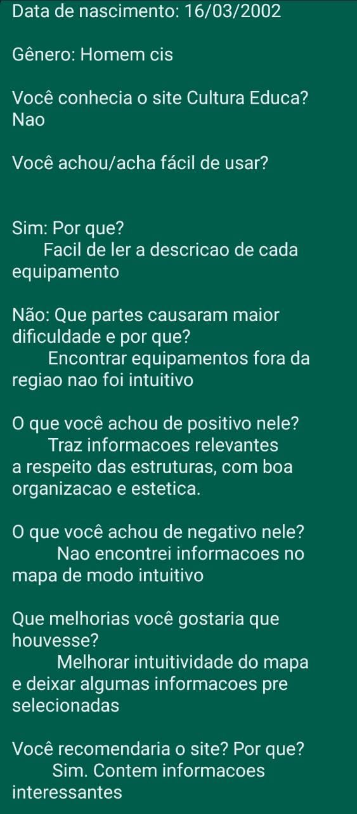
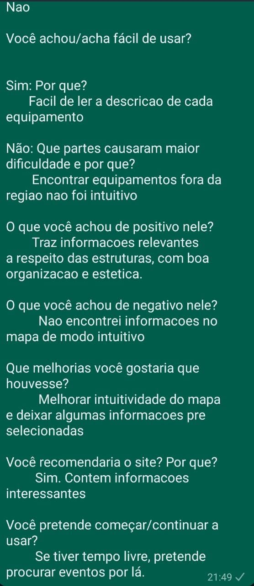
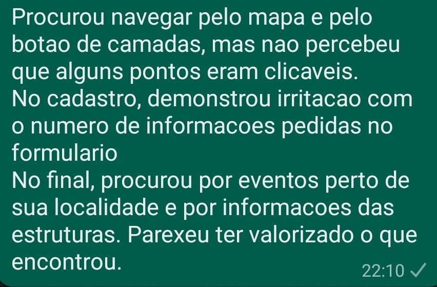

Cultura Educa Avaliação
Home
Extreme User Interview
Participante:
Matheus
Descrição:
Familiaridade com computadores intermediária, usa computadores frequentemente há um bom tempo e sabe fazer uso de várias ferramentas computacionais.
Data de nascimento:
16/03/2002
Gênero:
Homem cis
Você conhecia o site Cultura Educa?
Não
Você achou/acha fácil de usar?
As descrições de cada equipamento são fáceis de serem lidas.Não é intuitivo procurar informações fora da sua região, após o cadastro.
O que você achou de positivo nele?
Elogiou o tipo de informações trazidas pelo site acerca dos equipamentos sociais, bem como a organização delas, além da estética agradável.
O que você achou de negativo nele?
Encontrar informações no mapa não é intuitivo.
Que melhorias você gostaria que houvesse?
Melhorar a intuitividade na navegação pelo mapa e deixar alguma informação pré-selecionada nele, a fim de mostrar a interatividade.
Você recomendaria o site? Por que?
Sim, porque é um meio interessante de se encontrar as informações que estão lá.
Você pretende começar/continuar a usar?
Se tiver um espaço na minha agenda, posso procurar alguma atividade por lá.
Fly on the Wall
Observação
O participante primeiro procurou navegar pelo mapa e pela aba de camadas para visualizar as funcionalidades existentes por lá, porém não percebeu que alguns pontos eram clicáveis. Após isso, realizou o cadastro e também se incomodou com a longa lista de informações solicitadas no formulário. Por fim, verificou as estruturas perto de sua residência e leu as informações que constavam no site, com uma aparência de que gostou das informações encontradas.


